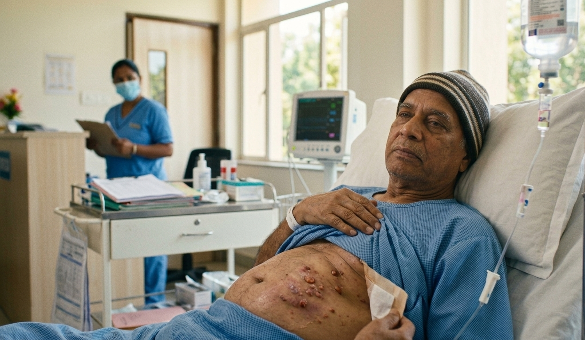
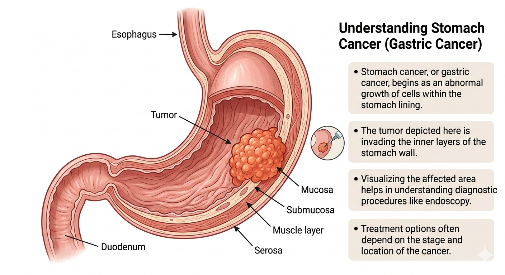
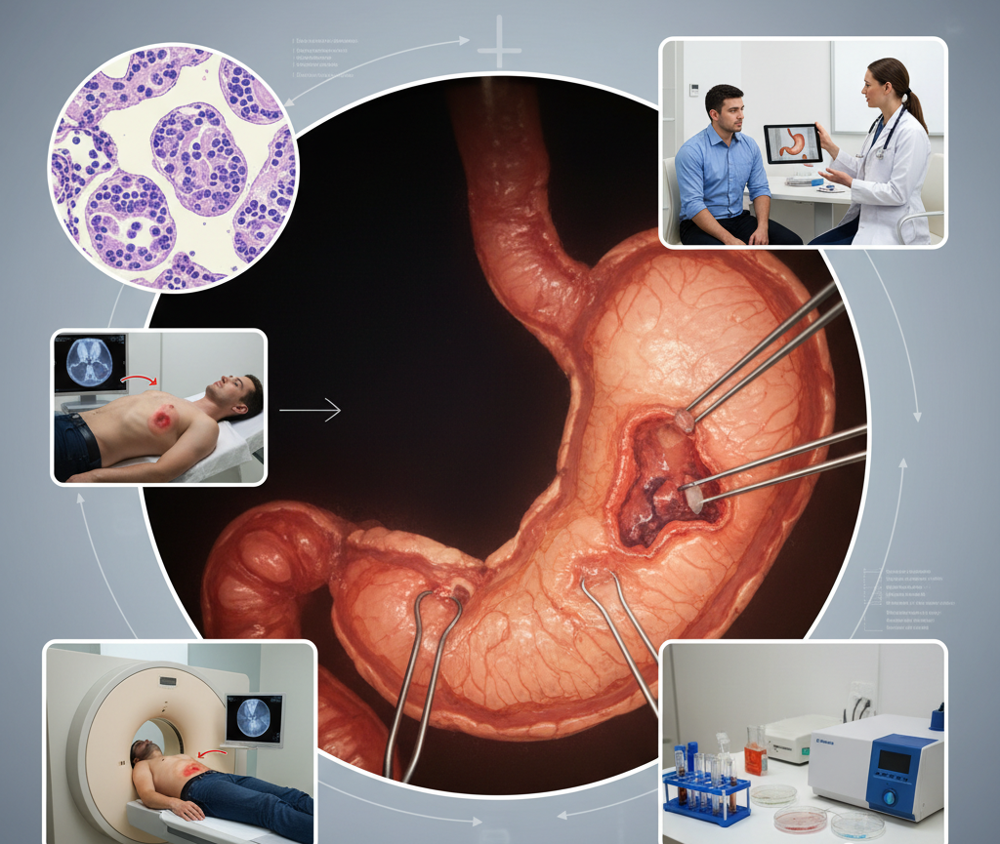
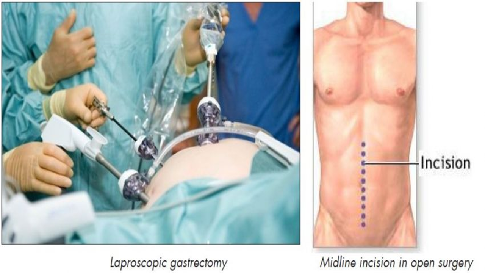

Stomach Cancer :
Usually stomach cancer(gastric cancer)starts in the lining of the stomach, growing slowly over the course of several years and causing symptoms only when it is advanced.

Types of Stomach Cancer :
Most people (up to 95 percent) develop a stomach cancer called Adenocarcinoma, which starts in the tissues that make up the stomach lining.
There are three types of Adenocarcinoma:
Stomach (Gastric) Cancer Symptoms :

The early stages of stomach cancer can be easy to miss. The symptoms, which can include an upset stomach and general stomach discomfort, are quite common and usually aren't related to anything serious. For example, an upset stomach can be mistaken for indigestion or a stomach virus. For these reasons, diagnosing stomach cancer in its earliest stages can be challenging.
Some symptoms that could be caused by stomach cancer when it's in the early stages include:
As stomach cancer becomes more advanced, the symptoms become more prominent and noticeable. They can include:
Stomach (Gastric) Cancer Diagnosis :
It's important that we are able to accurately diagnose and stage your stomach cancer to determine the best treatment approach for you. Improvements in our ability to identify subtle but important differences among various types of stomach cancer have also influenced how effectively we are able to treat the disease.

The following tests may be ordered when you visit us:
Endoscopy:
In an endoscopy, a doctor inserts a thin, lighted tube (an endoscope) into your mouth, down your esophagus, and into your stomach while you're sedated or under aesthesia. The endoscope allows your doctor to look at the inner lining of the stomach wall. It can also be used to take a sample of any areas your doctor wants analysed by a pathologist (a doctor who specializes in diagnosing disease).
CT Scan:
This scan can find the location and extent of the tumour. It provides your treatment team with 3-D images of your stomach. A CT scan can include a special dye that is designed to enhance the image.
PET Scan:
This scan involves the injection of a small amount of a radioactive substance that reveals any cancerous cells (cancer cells absorb the substance).
Endoscopic Ultrasound:
With this test, your doctor inserts an endoscope (a thin, lighted tube) into your mouth and then down into your stomach. An ultrasound probe at the tip of the endoscope bounces sound waves off your stomach's walls to create a highly detailed picture of your abdominal area, including nearby lymph nodes and organs.
Laparoscopic Staging:
During this minimally invasive surgical procedure, your doctor inserts a laparoscope (a thin, lighted tube with a camera on its tip) into your abdomen through a small incision in the skin. The image is projected on a large viewing screen. Your surgeon inspects the inside of the stomach and removes tissue samples using specially designed surgical instruments. The surgeon can also inspect the outside wall of the stomach, examine lymph nodes, and evaluate the surfaces of other nearby organs to determine if the cancer has spread to those areas.
Stages of Stomach Cancer :
Once your biopsy confirms your diagnosis, we'll use imaging tests to determine whether the cancer has spread beyond your stomach. This is known as the staging process, and it's a critical step in customizing a plan of care that fits your unique needs.

We use the TNM system to describe the stage of a cancer:
Stage 0 :
The tumour is found only in the inner layer of the stomach. Stage 0 is also called carcinoma in situ.
Stage I:
The tumour is one of the following:
STAGE II :
The tumour is one of the following:
STAGE III :
The tumour is one of the following:
STAGE IV :
Cancer cells have spread to distant organs.
Stomach Cancer Treatment :
Stomach cancer continues to become more treatable thanks to improvements in staging the disease, along with advances in surgical technology and expanding recognition of the different types of gastric cancer.
Surgery (gastrectomy) is the most common treatment approach, especially when the illness is at an early stage. For many people with gastric cancer, minimally invasive surgical techniques provide the best option since they tend to lead to fewer complications, shorter recovery times, less need for pain relief, and reduced risk that the cancer will return compared with open surgeries.
For more advanced stomach cancer, your care team may recommend treatments in addition to surgery, such as chemotherapy, radiation therapy, or a combination of these approaches.
Stomach Cancer Surgery :
Surgery is a common treatment for stomach cancer, especially when it's in its early stages.
Stomach cancers that are advanced or aggressive may require a partial or total gastrectomy.
Partial gastrectomy involves removing part of your stomach and the nearby lymph nodes (lymphadenectomy) to determine if they contain cancer cells. Depending on the tumour's location, your surgeon may also remove parts of other tissues and organs.
Total gastrectomy is an appropriate treatment if you have stomach cancer that's advanced but hasn't metastasized (spread) to other organs. Your surgeon removes your entire stomach and may also remove parts of other organs and tissues near the tumour. To enable you to continue eating and swallowing normally the surgeon then connects your esophagus to your small intestine.
Minimally Invasive Surgery Option :
Our gastric surgeons have been leaders in using minimally invasive surgical techniques to help treat stomach cancers. Your treatment team will meet with you to discuss your two primary options: laparoscopy or robot-assisted surgery. Both techniques can help shorten your recovery time and reduce your risk for complications.
Laparoscopy: With his approach, your surgeon inserts a laparoscope (a thin, lighted tube with a video camera at its tip) into your abdomen through a tiny incision in the skin. He or she can then operate through this small opening with special instruments.

Robot-assisted surgery: With this approach, your surgeon uses a robotic surgical tool to perform the operation from a console that displays a magnified 3-D image of the inside of your abdomen, highlighted with a special fluorescent dye.
Chemotherapy :
Depending on your situation and the stage of your cancer, chemotherapy and targeted therapies may help you live longer and experience fewer symptoms. Typically, we reserve these approaches for people with more advanced cancer.
Your treatment team may use chemotherapy in addition to surgery.
Another drug treatment for gastric cancer is intraperitoneal (IP) chemotherapy. With this approach, your doctor places chemotherapy drugs directly into your internal abdominal area using a surgically implanted catheter (a thin tube). IP chemotherapy can be a more effective treatment for stomach cancer than chemotherapy drugs taken by mouth or through an IV.
Radiation Therapy :
Radiation therapy uses high-energy rays or particles to kill cancer cells. We often use this approach after stomach cancer surgery if we think it might help you. We may recommend radiation therapy by itself or along with chemotherapy.
For example, if surgery isn't an option for you, radiation therapy may help make you more comfortable by reducing your symptoms. We can use sophisticated technologies to deliver radiation directly to tumours in and around your stomach while limiting exposure to nearby healthy tissue.